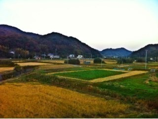
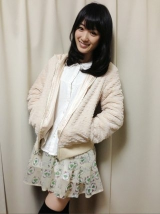
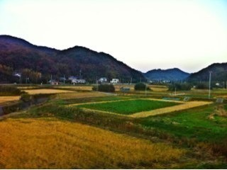
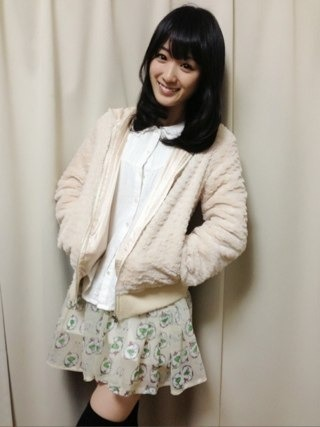

2012/1127Tue（´-`）.｡oO(かずみん×117
こんばんは( ^ω^ )
いつも応援ありがとうございます！
もう知っている方もいらっしゃるかと
思いますが、30日発売のブブカに
私高山一実が載っています(T_T)
ソロの取材、本当にありがたいです。
嬉しいです(T_T)
ただ、顔は不調の日だったかも
しれない...
ですが、公演以降、
あまり触れていなかったPARCOに
ついてや、とにかく色々なことを
赤裸々に語らせていただきました！
皆さんに見ていただけると
嬉しいです(^^)
---------
今週は実家に帰りました。

うん。のどかだ。
ゆったりまったり、過ごしました。
やっぱり田舎はいいね！
ホッとするね！
地元最高*\(^o^)/*
祖母も元気そうでよかったです！
--------
最近一気に寒くなりましたね。
皆さん体調は大丈夫ですか(ノ_＜)？
私は一昨年、fi.n.tの福袋に
入っていたもこもこパーカーを
着始めました！

あったかや〜。
これでマフラーつければOK！
...いや、それでも寒いです...(つД`)笑
皆さん、体調には気をつけて
下さいね(´･_･`)
---------
それでは、今日はこの辺で( ^ω^ )
おやすみなさい...☆
いつも応援ありがとうございます！
もう知っている方もいらっしゃるかと
思いますが、30日発売のブブカに
私高山一実が載っています(T_T)
ソロの取材、本当にありがたいです。
嬉しいです(T_T)
ただ、顔は不調の日だったかも
しれない...
ですが、公演以降、
あまり触れていなかったPARCOに
ついてや、とにかく色々なことを
赤裸々に語らせていただきました！
皆さんに見ていただけると
嬉しいです(^^)
---------
今週は実家に帰りました。

うん。のどかだ。
ゆったりまったり、過ごしました。
やっぱり田舎はいいね！
ホッとするね！
地元最高*\(^o^)/*
祖母も元気そうでよかったです！
--------
最近一気に寒くなりましたね。
皆さん体調は大丈夫ですか(ノ_＜)？
私は一昨年、fi.n.tの福袋に
入っていたもこもこパーカーを
着始めました！

あったかや〜。
これでマフラーつければOK！
...いや、それでも寒いです...(つД`)笑
皆さん、体調には気をつけて
下さいね(´･_･`)
---------
それでは、今日はこの辺で( ^ω^ )
おやすみなさい...☆
2012/11/27 23:54
コメント(369)
ブブカ買うしか！！！
い、田舎だな！！！
うちの近所みたいだ！！！←
かずみんおつかれさまー！
ブブカチェックするよ〜。
かずみんの顔がどんなか楽しみです( ꒪⌓꒪)
ブブカチェックするよ〜。
かずみんの顔がどんなか楽しみです( ꒪⌓꒪)
かずみんのほのぼのぐあい
ぱねぇす
実家っていいですよね！
本当に心が落ち着くっていうか
ぱねぇす
実家っていいですよね！
本当に心が落ち着くっていうか
お疲れ様＼(^o^)／
なんやかんやで初コメかも！
てか写真のかずみんめっさ綺麗やん！
寒いの嫌いなんよね(T ^ T)
この前靴が二足で5Kやったから思わず買っちゃった！
結構可愛い靴やったんよ！
なんかいい買い物したわ＼(^o^)／
かずみんは最近いい買い物した？
なんやかんやで初コメかも！
てか写真のかずみんめっさ綺麗やん！
寒いの嫌いなんよね(T ^ T)
この前靴が二足で5Kやったから思わず買っちゃった！
結構可愛い靴やったんよ！
なんかいい買い物したわ＼(^o^)／
かずみんは最近いい買い物した？
かずみん！
絶対買うよー(￣∇￣)
楽しみにしてる!!
田舎良いね～
住みたいな～(~o~)
かずみんも風邪に気をつけて頑張ってね～!!!!
絶対買うよー(￣∇￣)
楽しみにしてる!!
田舎良いね～
住みたいな～(~o~)
かずみんも風邪に気をつけて頑張ってね～!!!!
すごく寒いですよね。
かずみんも体調に気を付けてください！
それじゃあね！
かずみんも体調に気を付けてください！
それじゃあね！
かずみん( ｀.∀´）y-
スゲー田舎ｗｗｗ
化けトン撮って来て欲しかったｗ
何か最近めちゃ可愛いですね
バイバイ
山とか自然に囲まれてて空気が気持ち良さそう!
俺もそういうところに住んでみたい(^o^)
僕は毎日元気です(笑)
かずみんはおしゃんてぃーだね！
またコメントしますね！
早く握手会でかずみんと話したいなぁ～！
おやすみ(-_-)zzz
俺もそういうところに住んでみたい(^o^)
僕は毎日元気です(笑)
かずみんはおしゃんてぃーだね！
またコメントしますね！
早く握手会でかずみんと話したいなぁ～！
おやすみ(-_-)zzz
そのパーカー着た写メ可愛いね。
惚れそう♥
かずみさんは面白いときの顔と可愛い時の顔の
ギャップが激しすぎるぜ～w
さゆりんブログの変顔最高だぜ～～！
惚れそう♥
かずみさんは面白いときの顔と可愛い時の顔の
ギャップが激しすぎるぜ～w
さゆりんブログの変顔最高だぜ～～！
かずみーん、こんばんは☆
めっちゃのどかやね
「ばけとん」はどこかなぁ？？www
ブブカ知らんかったーー
チェックします
めっちゃのどかやね
「ばけとん」はどこかなぁ？？www
ブブカ知らんかったーー
チェックします
ぶぶかみるよ～
かずみん今日もお綺麗ですわっ
家にいても手足寒いよ
かずみんも体調には気をつけてね
明日も元気にふぁいっとだぁ～
かずみん今日もお綺麗ですわっ
家にいても手足寒いよ
かずみんも体調には気をつけてね
明日も元気にふぁいっとだぁ～
ブブカのインタビュー
毎月乃木坂のメンバーを
１人ずつインタビューしていて
内容も濃いから楽しみ
千葉といえば中学時代から
内房の袖ヶ浦に2年
大学時代は４年 外房の
大多喜にいたからなつかしいよ
大多喜は、当時無人駅で畑が多かった
かずみん行ったことある？
毎月乃木坂のメンバーを
１人ずつインタビューしていて
内容も濃いから楽しみ
千葉といえば中学時代から
内房の袖ヶ浦に2年
大学時代は４年 外房の
大多喜にいたからなつかしいよ
大多喜は、当時無人駅で畑が多かった
かずみん行ったことある？
かずみん こんばんは (=´∀｀)人(´∀｀=)
ブブカ発売されたら探してみるね ( ´ ▽ ` )ﾉ
PARCO公演について
どんな心境だったのかとか気になる *\(^o^)/*
自分の実家もなかなか田舎やけど
かずみん の地元も結構な田舎やね ！(◎_◎;)
日本らしい田園風景とか
のどかで時間がゆっくり流れるとことか
田舎ってやっぱり落ち着くよね ♪( ´▽｀)
最近ほんとに寒いね (>_<)
自転車とか乗ってると手がヒエヒエで痛い (つД`)ノ
手袋買わねば！
かずみん も体調崩したりしないように気をつけてね (=ﾟωﾟ)ﾉ
今日も一日おつかれさま ♪
おやすみー (*^^*)
一実☆更新ありがとう☆お疲れ様！
ブブカ見るねっ！
実家に帰れたんだ！ゆっくり出来たみたいで良かったねっ☆写真いいねぇ〜、のどかだ！
制服のマネキンのＰＶ、もう何度も観てるよっ！やっぱかっこいい！発売日が待ち遠しい！そして握手会もねっ☆
本当に寒くなって来たね。一実も体に気を付けて頑張ってねぇ〜！
そんじゃ、またねぇ☆
今日も一実が、笑顔でありますように！！
ブブカ見るねっ！
実家に帰れたんだ！ゆっくり出来たみたいで良かったねっ☆写真いいねぇ〜、のどかだ！
制服のマネキンのＰＶ、もう何度も観てるよっ！やっぱかっこいい！発売日が待ち遠しい！そして握手会もねっ☆
本当に寒くなって来たね。一実も体に気を付けて頑張ってねぇ〜！
そんじゃ、またねぇ☆
今日も一実が、笑顔でありますように！！
ブブカ買います。かずみんのこと色々しりたいですから。
実家に帰っていたんですか、写メ見る限りすごいのどかな所ですね。
かずみんこそ、体調気をつけてください。
実家に帰っていたんですか、写メ見る限りすごいのどかな所ですね。
かずみんこそ、体調気をつけてください。
こんばんは♪
必ずブブカチェックします!!
田舎はいいですよね(*^^*)
自分も地元に帰りたいです(T-T)
明日も頑張ってください(^-^)/
では、お休みなさい(-.-)Zzz・・・・
初コメです‼
出来たら覚えてね（笑）
ほんと寒いですね(-｡-;
自分はパーカー好きなんですo(^▽^)o
一実さん結構似合ってました！！
出来たら覚えてね（笑）
ほんと寒いですね(-｡-;
自分はパーカー好きなんですo(^▽^)o
一実さん結構似合ってました！！
あ、田舎･･･
かずみんどこ出身やっけ？？
自己紹介の記憶があんまりないからわからへんわ＞＜
どこであろうと田舎ののどかな感じがいいよね♪
でも最近はあぜ道とか通ると風が寒い(´･_･`)
きれいな星空見上げて明日からもがんばろー！(^O^)
かずみんどこ出身やっけ？？
自己紹介の記憶があんまりないからわからへんわ＞＜
どこであろうと田舎ののどかな感じがいいよね♪
でも最近はあぜ道とか通ると風が寒い(´･_･`)
きれいな星空見上げて明日からもがんばろー！(^O^)
ヤッシーです(^-^)v
千葉ものどかやなー…。
最近、体調不良です…。
へばっまずな(^-^)/~~
千葉ものどかやなー…。
最近、体調不良です…。
へばっまずな(^-^)/~~
にゅん(=ﾟωﾟ)ﾉ
たかやまってた！笑
ブブカに載ったんだ(*^^*)
見れたらチェックしとくねｂ
地元っていいよねっ♪
高山も風邪ひかないようにね*\(^o^)/*
☆☆☆☆☆☆プーさん☆☆☆☆☆☆
たかやまってた！笑
ブブカに載ったんだ(*^^*)
見れたらチェックしとくねｂ
地元っていいよねっ♪
高山も風邪ひかないようにね*\(^o^)/*
☆☆☆☆☆☆プーさん☆☆☆☆☆☆
かずみん可愛いすぎ♪
乃木どこのオープニングで
カメラの最後に写る
かずみんとなあちゃんが
すごい好き！
５th選抜でポジションが
決まるまでいっぱい目立ってください！
応援してます(((っ･ω･)っ♡
乃木どこのオープニングで
カメラの最後に写る
かずみんとなあちゃんが
すごい好き！
５th選抜でポジションが
決まるまでいっぱい目立ってください！
応援してます(((っ･ω･)っ♡
どうも～
30日のブブカね絶対観るよ～
コンビニで・・・ｗ
忘れるかも知れないので30日に改めて告知よろしくｗ
実家に帰ってたんだねぇ～
可愛い可愛い犬にも会えた？ｗ
つか、同じ千葉でもうちの方が都会ですなｗ
それにしても、最近乃木坂不足～
なにかありませんか？ｗ
30日のブブカね絶対観るよ～
コンビニで・・・ｗ
忘れるかも知れないので30日に改めて告知よろしくｗ
実家に帰ってたんだねぇ～
可愛い可愛い犬にも会えた？ｗ
つか、同じ千葉でもうちの方が都会ですなｗ
それにしても、最近乃木坂不足～
なにかありませんか？ｗ
かずみさんカワユス
お疲れさま！(´ω`)
初コメじゃないけど久しぶりに
コメさせてもらいまーす(・∀・)
この前のも
何かの縁だと思ってます←(・∀・)
てか実家に帰ったんだ！
そういえばすごい田舎だって
たっくんにも聞いたわ(笑)
田舎いいよね！
俺も地元大分もすごい田舎です。
コンビニ行くのに車で
10分かかります w
まぁ一実さんの所は
そこまでないだろうけど w
話変わりましてブブカ載るんだね！
見てみます！笑
ではーまたねー(￣ー￣)
ひかる
こんばんはヾ(･∀･`o)ﾉ))
ブブカチェックするよヾ(*´∀｀*)ﾉ
かずみんがメインで載るの楽しみだなぁ
PARCO公演はずれちゃったからその話興味ある！
地元ののどかな感じいいなぁ(o´д｀o)
都会っこだからすごくあこがれる！
パーカー可愛い\(//∇//)\
それほしい←
最近すごい寒いよねー。
室蘭の豪雪のニュース聞いてびっくりしたもん
かずみんも風邪気をつけてねヽ(・ω・｀)
ホントかずみん可愛い！
じゃあまたね(*´∇｀)ﾉ
ブブカチェックするよヾ(*´∀｀*)ﾉ
かずみんがメインで載るの楽しみだなぁ
PARCO公演はずれちゃったからその話興味ある！
地元ののどかな感じいいなぁ(o´д｀o)
都会っこだからすごくあこがれる！
パーカー可愛い\(//∇//)\
それほしい←
最近すごい寒いよねー。
室蘭の豪雪のニュース聞いてびっくりしたもん
かずみんも風邪気をつけてねヽ(・ω・｀)
ホントかずみん可愛い！
じゃあまたね(*´∇｀)ﾉ
やっほー(゜゜)!!
更新ありがとー
ブブカチェックしときます＼(^o^)／
こんばんわ
ソロでの取材おめでたい！
かわいいから大丈夫
それにしても寒い((+_+))
温かくしないとね(^-^)
おやすみなさい(*^^*)
ソロでの取材おめでたい！
かわいいから大丈夫
それにしても寒い((+_+))
温かくしないとね(^-^)
おやすみなさい(*^^*)
高山さんの故郷、ほんとにのどかだね。
おれの住んでるとこ以上にのどかだから驚いたよ（;￣O￣）
今日も一日お疲れ(^o^)
おやすみ！
おれの住んでるとこ以上にのどかだから驚いたよ（;￣O￣）
今日も一日お疲れ(^o^)
おやすみ！
かずみぃぃぃぃぃいいいいいん＼(^o^)／
単独取材とか!!
キタコレーーーー(_≧Д≦)ﾉ彡☆♪
最近乃木坂の話題あんまりなくて寂しいなぁと思ってたんだけど、かずみんソロ取材はめっちゃ嬉しい！！ 金欠だけど絶対買うわ！笑
実家やばくねwww
田舎やーーー！ やっほーーーーー！！
.......ゃっほー(やっほー、ゃっほー)←山彦（笑）
のどかやね！ 素晴らしい！！
なんか裏山とか持ってそうww うらやまーwww
.....ギャグ線＞＜
もこもこぱーかー可愛い
似合ってるよ!!
あ、そうだ。PVみたよ！
ちゃんとかずみん見つけたで
今回のPVいつもと違ってめっちゃ好きだわ！！
ダンスかっこいいし、みんなの良さが出てる。
もちろんかずみんも。
なんか髪型(前髪？)が、デビュー当初に戻った感じがしてすごく新鮮でよかった
あれだね、前髪はしっかりキメるより左横に流した方が好きだわ
表情もしっかり見れるし！！
前髪下ろしてると光が当たらなくて表情が暗くなっちゃってるのかも....
かずみん上目遣い得意だからより流したほうが良い気もするなぁ.....
れなりんとの2ショットの時みたいに！
......なんか俺ごときがすいません＞＜
最近寒いよねー
朝布団から出るのつらい
まぁ今日も1日頑張りましょう！！！！
☆☆☆(なお・ω・やん)☆☆☆
単独取材とか!!
キタコレーーーー(_≧Д≦)ﾉ彡☆♪
最近乃木坂の話題あんまりなくて寂しいなぁと思ってたんだけど、かずみんソロ取材はめっちゃ嬉しい！！ 金欠だけど絶対買うわ！笑
実家やばくねwww
田舎やーーー！ やっほーーーーー！！
.......ゃっほー(やっほー、ゃっほー)←山彦（笑）
のどかやね！ 素晴らしい！！
なんか裏山とか持ってそうww うらやまーwww
.....ギャグ線＞＜
もこもこぱーかー可愛い
似合ってるよ!!
あ、そうだ。PVみたよ！
ちゃんとかずみん見つけたで
今回のPVいつもと違ってめっちゃ好きだわ！！
ダンスかっこいいし、みんなの良さが出てる。
もちろんかずみんも。
なんか髪型(前髪？)が、デビュー当初に戻った感じがしてすごく新鮮でよかった
あれだね、前髪はしっかりキメるより左横に流した方が好きだわ
表情もしっかり見れるし！！
前髪下ろしてると光が当たらなくて表情が暗くなっちゃってるのかも....
かずみん上目遣い得意だからより流したほうが良い気もするなぁ.....
れなりんとの2ショットの時みたいに！
......なんか俺ごときがすいません＞＜
最近寒いよねー
朝布団から出るのつらい
まぁ今日も1日頑張りましょう！！！！
☆☆☆(なお・ω・やん)☆☆☆
お疲れかずみん！
田舎いいよねー
俺は都会より田舎の方が好きだぞ(^^)
うるさくないし、景色いいし、ご飯うまいし(笑)
ぶぶか絶対買うわ(o^^o)
田舎いいよねー
俺は都会より田舎の方が好きだぞ(^^)
うるさくないし、景色いいし、ご飯うまいし(笑)
ぶぶか絶対買うわ(o^^o)
かずみんこんばんは!!
田舎いいですね。。
きれいな田んぼ
きれいな山々
いいですね。。
かずみんは
都会か田舎どっちが
好きなんですか？
眠たい…
故に寝ます
田舎いいですね。。
きれいな田んぼ
きれいな山々
いいですね。。
かずみんは
都会か田舎どっちが
好きなんですか？
眠たい…
故に寝ます
僕の実家といい勝負なくらい田舎ですな(笑)
落ち着きますな。
今、大学で1人暮らししてて
（僕の田舎より）都会だなーとか思ってたら、
友達からすると、田舎過ぎてなんもやることない。らしいです。
・・・育ってきた環境でここまで違うんだね。
寒いし、乾燥するし気をつけようね。
落ち着きますな。
今、大学で1人暮らししてて
（僕の田舎より）都会だなーとか思ってたら、
友達からすると、田舎過ぎてなんもやることない。らしいです。
・・・育ってきた環境でここまで違うんだね。
寒いし、乾燥するし気をつけようね。
ソロ掲載おめでとうございます！
チェックしますね！！
地元いいですよね！落ち着きますし。
かずみんも風邪には充分お気をつけて。
もこもこパーカー似合ってますよ！可愛い！！
チェックしますね！！
地元いいですよね！落ち着きますし。
かずみんも風邪には充分お気をつけて。
もこもこパーカー似合ってますよ！可愛い！！
かずみん、こんばんは(^^)/
ブブカ買いますね♪
僕の祖父の家もかずみんの地元みたいだよ。
田舎は落ち着きます(^^)
かずみんも体調には気をつけて下さいね。
では、おやすみなさい(o^^o)
ブブカ買いますね♪
僕の祖父の家もかずみんの地元みたいだよ。
田舎は落ち着きます(^^)
かずみんも体調には気をつけて下さいね。
では、おやすみなさい(o^^o)
かずみんこんばんはっ！(^o^)
ブブカ見てみようかな♪
もこもこのパーカー似合っとるよ～(^q^)
寒いけどポジティブにいけば寒くないっ！！笑
デワデワっち(￣^￣)ゞ
ブブカ見てみようかな♪
もこもこのパーカー似合っとるよ～(^q^)
寒いけどポジティブにいけば寒くないっ！！笑
デワデワっち(￣^￣)ゞ
ブブカ買うしかぁ～♪ (〃▽〃)
っていうか、顔が不調って・・・^^;
ハードル下げてるん？^^;
お互い寒さに負けんとこうな♪ かずみ！！ Σ(ﾟдﾟﾉ;)ﾉｴｪ～
↑
(/□≦、).｡oO(ﾅﾝｶ､ﾊｽﾞｶｼｽ…
(〃艸〃)
っていうか、顔が不調って・・・^^;
ハードル下げてるん？^^;
お互い寒さに負けんとこうな♪ かずみ！！ Σ(ﾟдﾟﾉ;)ﾉｴｪ～
↑
(/□≦、).｡oO(ﾅﾝｶ､ﾊｽﾞｶｼｽ…
(〃艸〃)
ブロク更新ありがと♪
ブブカ絶対チエックするね☆
楽しみや～
マジで最近寒くなってきたよなぁ～(*_*)
かずみんも風邪には気をつけてな(ノ゜O゜)ノ
ブブカ絶対チエックするね☆
楽しみや～
マジで最近寒くなってきたよなぁ～(*_*)
かずみんも風邪には気をつけてな(ノ゜O゜)ノ
ブブカ絶対買うよ！
さっきネットで表紙見たけど、
『乃木坂４６ 高山一実 インタビュー』
の文字にめっちゃテンション上がった！＼(^o^)／
PARCOにはすごく思い入れあるから、本当に楽しみ。
実家に帰ってゆっくりできたみたいでよかったね。
最近は4ｔｈの撮影や海外、似顔絵会にお渡し会と立て込んでたから心配してたんだ。
かずみんこそ体調には気をつけてね。
さっきネットで表紙見たけど、
『乃木坂４６ 高山一実 インタビュー』
の文字にめっちゃテンション上がった！＼(^o^)／
PARCOにはすごく思い入れあるから、本当に楽しみ。
実家に帰ってゆっくりできたみたいでよかったね。
最近は4ｔｈの撮影や海外、似顔絵会にお渡し会と立て込んでたから心配してたんだ。
かずみんこそ体調には気をつけてね。
故郷っていいよね。
僕も故郷、長野県佐久に帰りたい。
ここ最近、何をやっても駄目。
仕事もプライベートも…とにかく全部駄目(ｰｰ;)
田舎に帰って、ぽーっとしたい。
どうしたらポジティブになれる？
カキフライ食べればいいかな？
かずみんの鼻の下見てるといいかな？
でも、かずみんのブログの写真で少し元気になりました(*^^*)
最近、めっきり寒くなってきてきたけど、体調には気を付けて！
ポジティブなかずみんの活躍ぶりが僕の元気の源です。
おやすみなさい^_−☆
僕も故郷、長野県佐久に帰りたい。
ここ最近、何をやっても駄目。
仕事もプライベートも…とにかく全部駄目(ｰｰ;)
田舎に帰って、ぽーっとしたい。
どうしたらポジティブになれる？
カキフライ食べればいいかな？
かずみんの鼻の下見てるといいかな？
でも、かずみんのブログの写真で少し元気になりました(*^^*)
最近、めっきり寒くなってきてきたけど、体調には気を付けて！
ポジティブなかずみんの活躍ぶりが僕の元気の源です。
おやすみなさい^_−☆
思ってたより田舎でワロタｗ
自分も田舎なんで親近感湧きました。
すいません初コメです。
ブブカ楽しみにしてますノシ
自分も田舎なんで親近感湧きました。
すいません初コメです。
ブブカ楽しみにしてますノシ
実家でリラックス出来たのかな??
いつも思うんだけど、かずみんって私服可愛いよね♪
なんかテレビのイメージとはちょっと違う&ezF7CE;
また更新楽しみにしてるねー
いつも思うんだけど、かずみんって私服可愛いよね♪
なんかテレビのイメージとはちょっと違う&ezF7CE;
また更新楽しみにしてるねー
自分の住んでるとこと競るくらい田舎だ(笑)
駅まで遠くて不便すぎてもう住むの嫌です
地元に愛着とか全然なくて逃げ出したい…
ブブカ出たらチェックしてみます
スタードラフトにベリキューさんが出ててダンスしてた
確か鈴木さん清水さん岡井さん萩原さん徳永さんだった
揃っててキレがあってすごくよかったけど対戦相手に負けてた
ハロプロのダンスって揃えることが大事だから見ててキレイだった
あの中に中島さんがいないのがちょっと残念でした
駅まで遠くて不便すぎてもう住むの嫌です
地元に愛着とか全然なくて逃げ出したい…
ブブカ出たらチェックしてみます
スタードラフトにベリキューさんが出ててダンスしてた
確か鈴木さん清水さん岡井さん萩原さん徳永さんだった
揃っててキレがあってすごくよかったけど対戦相手に負けてた
ハロプロのダンスって揃えることが大事だから見ててキレイだった
あの中に中島さんがいないのがちょっと残念でした
お疲れ！
いつも応援しております！
ブブカ絶対買うわ！
かずみん顔いつも絶好調やん（笑）
俺は千葉が好きだ！ロッテファンだからな！！！
いいねその服！私服カナ！？
超カワイイじゃん！一緒に街を歩いてみたいもんだ（笑）
ガジ最近寒いよな・・・
まぁ北海道出身の俺にとって東京の寒さはまだまだ余裕（笑）
体調には気をつけてな(´・ω・｀)
いつも応援しております！
ブブカ絶対買うわ！
かずみん顔いつも絶好調やん（笑）
俺は千葉が好きだ！ロッテファンだからな！！！
いいねその服！私服カナ！？
超カワイイじゃん！一緒に街を歩いてみたいもんだ（笑）
ガジ最近寒いよな・・・
まぁ北海道出身の俺にとって東京の寒さはまだまだ余裕（笑）
体調には気をつけてな(´・ω・｀)
にしてもかずみんの地元って感じの(笑)(笑)街並みでやんすねヽ（゜ロ゜；）ノ(´・ω・｀)
あいも変わらず脚線美もすんばらしいでやんすな～～(・∀・)イイ(゜Д゜；≡；゜Д゜)
あ～ブブカの一万字インタビューとかいう奴でやんすな(^_^;))))))コソコソ…(つд｀)。
これまたドンピシャでなかですきに～～そーかいい背景があったもんでやんすね
最近よんでた『戦国時代の余談のよだん』(著・和田竜)ってので(のぼうの城の原作者さん)
いやーこうやって人気作品はできてくもんなんだなって思いましたがや(゜Д゜；≡；゜Д゜)(>_<。)
あいも変わらず脚線美もすんばらしいでやんすな～～(・∀・)イイ(゜Д゜；≡；゜Д゜)
あ～ブブカの一万字インタビューとかいう奴でやんすな(^_^;))))))コソコソ…(つд｀)。
これまたドンピシャでなかですきに～～そーかいい背景があったもんでやんすね
最近よんでた『戦国時代の余談のよだん』(著・和田竜)ってので(のぼうの城の原作者さん)
いやーこうやって人気作品はできてくもんなんだなって思いましたがや(゜Д゜；≡；゜Д゜)(>_<。)
おやすみなさい
いい夢を
いい朝を
いい明日を
明日の分のおはようさん
いい夢を
いい朝を
いい明日を
明日の分のおはようさん
かずみんこんばんは～！
ブブカのインタビュー、絶対チェックするね！！
かずみんはいつだってカワイイから不調な日なんて無いと思うよ！！
それにしてもBUBKAは昔のゴシップ誌の頃からは様変わりして、きっちりしたアイドル雑誌になったよねえ。
かずみんの地元ってこんなに田園風景の広がるのどかな場所だったんだね。
本当に伸び伸び出来そうな良い環境だなー。
2枚目の写メのもこもこパーカー着たかずみんとっても可愛いよ～。
やっぱりふわっとした感じの服が似合うんだね！
明日も一日頑張ってねヽ(´ー｀)ノ
ブブカのインタビュー、絶対チェックするね！！
かずみんはいつだってカワイイから不調な日なんて無いと思うよ！！
それにしてもBUBKAは昔のゴシップ誌の頃からは様変わりして、きっちりしたアイドル雑誌になったよねえ。
かずみんの地元ってこんなに田園風景の広がるのどかな場所だったんだね。
本当に伸び伸び出来そうな良い環境だなー。
2枚目の写メのもこもこパーカー着たかずみんとっても可愛いよ～。
やっぱりふわっとした感じの服が似合うんだね！
明日も一日頑張ってねヽ(´ー｀)ノ
更新お疲れ様＼(^o^)／
( ^ω^ )この顔文字(笑)(笑)(笑)(笑)
ブブカすごい楽しみ(´□｀)
がっつり載るのってナタリーの記事以来かな？
すごい楽しみだよ＼(^o^)／
不調だったかもなんて･･･
買う前に予防線はるのやめいｗｗ
公演の話聞けるのか。
行ってないから何とも言い難いけど
すごい評価もらってたもんね。すごい興味ある！
ブブカさんグッジョブですわ～
あまり同じにブログに何回もコメントするの嫌いだけど、読んだらすぐ感想書いておくね！！
-------
実家すごいのどかだね(';')
ってことはチョコ君にも会ったんでしょ?
可哀想だから不細工とかやめてあげてwww
長く見えるのはトイプだからしょうがないんだよ (ﾉД`)
山間の田舎いいなぁ。
海沿いにしか田舎に住んでる親戚がいなくて (ﾉД`)
すごくいい景色だね(´□｀)
------
パーカー出してきたのか
急に寒くなってきたよね＾＾
最高の季節到来したわ(`･ω･´)
かずみんがマフラーしてるとこ見てみたい！
絶対可愛いでしょ！
写真ください(゜-゜)
---‐---
今日もブログ楽しかったよ
更新お疲れ様
かずみんも風邪ひかないようにね(´･ω･)
乾燥してるから喉とか特にね
じゃ、明日のテストの勉強頑張ってきます
ではでは
( ^ω^ )この顔文字(笑)(笑)(笑)(笑)
ブブカすごい楽しみ(´□｀)
がっつり載るのってナタリーの記事以来かな？
すごい楽しみだよ＼(^o^)／
不調だったかもなんて･･･
買う前に予防線はるのやめいｗｗ
公演の話聞けるのか。
行ってないから何とも言い難いけど
すごい評価もらってたもんね。すごい興味ある！
ブブカさんグッジョブですわ～
あまり同じにブログに何回もコメントするの嫌いだけど、読んだらすぐ感想書いておくね！！
-------
実家すごいのどかだね(';')
ってことはチョコ君にも会ったんでしょ?
可哀想だから不細工とかやめてあげてwww
長く見えるのはトイプだからしょうがないんだよ (ﾉД`)
山間の田舎いいなぁ。
海沿いにしか田舎に住んでる親戚がいなくて (ﾉД`)
すごくいい景色だね(´□｀)
------
パーカー出してきたのか
急に寒くなってきたよね＾＾
最高の季節到来したわ(`･ω･´)
かずみんがマフラーしてるとこ見てみたい！
絶対可愛いでしょ！
写真ください(゜-゜)
---‐---
今日もブログ楽しかったよ
更新お疲れ様
かずみんも風邪ひかないようにね(´･ω･)
乾燥してるから喉とか特にね
じゃ、明日のテストの勉強頑張ってきます
ではでは
かずみさんが元気そうで
良かったです!!
田舎いいよね
ゆっくりできる感じがする
(*´∀｀*)
雑誌もついにソロでやったんですね!!
買おうかなぁ笑
かずみさんも体調くずさないよーにね
ヾ(=^▽^=)ノ
良かったです!!
田舎いいよね
ゆっくりできる感じがする
(*´∀｀*)
雑誌もついにソロでやったんですね!!
買おうかなぁ笑
かずみさんも体調くずさないよーにね
ヾ(=^▽^=)ノ
こんばんは!!
いい写真ばかりだね！
昨日、今日とカキフライ食べました♪
カキフライ食べるとかずみん思い出すこの感じはなんだ(笑)
いい写真ばかりだね！
昨日、今日とカキフライ食べました♪
カキフライ食べるとかずみん思い出すこの感じはなんだ(笑)


初コメです(*^^*)
かずみんの私服可愛いなぁ♪
かずみんも可愛いからさらにだね(^-^)
ｱﾒｲｼﾞﾝｸﾞですな＼(^o^)／
体調には気をつけて下さい！
お休みなさい(^^)v